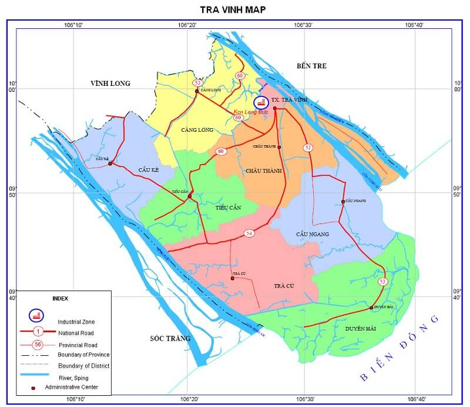

Trà Vinh là một tỉnh thuộc đồng bằng sông Cửu Long. Vị trí địa lý giới hạn từ 9°31'46" đến 10°4'5" vĩ độ Bắc và từ 105°57'16" đến 106°36'04" kinh độ Đông. Trà Vinh cách thành phố Hồ Chí Minh 200 km đi bằng quốc lộ 53 qua tỉnh Vĩnh Long, khoảng cách rút ngắn thời gian chỉ còn 130 km nếu đi bằng quốc lộ 60 qua tỉnh Bến Tre, cách thành phố Cần Thơ 50 km. Được bao bọc bởi sông Tiền, sông Hậu với 02 cửa Cung Hầu và Định An nên giao thông đường thủy có điều kiện phát triển.
Trà Vinh là tỉnh duyên hải Đồng bằng sông Cửu Long, có vị trí địa lý:
|
 |
Trà Vinh nằm ở phần cuối cù lao kẹp giữa sông Tiền và sông Hậu.
Do sự chia cắt bởi các giồng và hệ thống trục lộ, kinh rạch chằng chịt, địa hình toàn vùng khá phức tạp. Các vùng trũng xen kẹp với các giồng cao, xu thế độ dốc chỉ thể hiện trên từng cánh đồng. Riêng phần phía nam tỉnh là vùng đất thấp, bị các giống cát hình cánh cung chia cắt thành nhiều vùng trũng cục bộ, nhiều nơi chỉ ở độ cao 0,5-0,8 m nên hàng năm thường bị ngập mặn 0,4-0,8 m trong thời gian 3-5 tháng.
Trước đây vùng đất Trà Vinh còn được gọi là xứ Trà Vang. Tên Trà Vang vốn có nguồn gốc từ ngôn ngữ Môn-Khmer cổ mà dân gian thường gọi là Trah Păng. Tên gọi ấy phản ánh đặc điểm cảnh quan thuở xa xưa của một vùng đất mới được bồi đắp ở ven sông, ven biển, có nhiều vùng trũng, đầm lầy,... Vì vậy, Trà Vinh là tỉnh còn tương đối non trẻ.
Ngày 21 tháng 7 năm 1956, Chính phủ Việt Nam Cộng hòa thành lập quận Long Toàn thuộc tỉnh Trà Vinh, quận lỵ đặt tại xã Long Toàn.
Ngày 22 tháng 10 năm 1956, Tổng thống Việt Nam Cộng hòa Ngô Đình Diệm ra Sắc lệnh 143-NV về việc giải thể và sáp nhập tỉnh Tam Cần vào tỉnh Trà Vinh, đồng thời đổi tên tỉnh Trà Vinh thành tỉnh Vĩnh Bình; đổi tên xã Long Đức thành xã Phú Vinh và chọn làm lỵ sở của quận Châu Thành, tỉnh Vĩnh Bình. Theo đó, Vĩnh Bình là một trong 43 tỉnh của "lãnh thổ Việt Nam Cộng hòa" và là một trong 22 tỉnh của Nam phần Việt Nam Cộng hòa. Lúc này, tỉnh lỵ tỉnh Vĩnh Bình cũng bị đổi tên tên là "Phú Vinh", do lấy theo tên xã Phú Vinh thuộc quận Châu Thành là nơi đặt tỉnh lỵ.
Năm 1957, tỉnh Vĩnh Bình (Trà Vinh) có 9 quận là Trà Ôn, Vũng Liêm, Càng Long, Cầu Kè, Châu Thành, Tiểu Cần, Trà Cú, Cầu Ngang và Long Toàn. Đến ngày 14 tháng 1 năm 1967 theo sắc lệnh số 06/SL/ĐUHC chính quyền Đệ Nhị Cộng hoà, tách hai quận Vũng Liêm và Trà Ôn ra khỏi tỉnh Vĩnh Bình để nhập vào tỉnh Vĩnh Long, do đó tỉnh Vĩnh Bình cho đến năm 1975 chỉ còn lại bảy quận: Càng Long, Cầu Kè, Châu Thành, Tiểu Cần, Trà Cú, Cầu Ngang và Long Toàn. Đồng thời, tỉnh lỵ tỉnh Vĩnh Bình vẫn giữ nguyên tên là "Phú Vinh" cho đến năm 1975.
Tuy nhiên, chính quyền Mặt trận Dân tộc Giải phóng Miền Nam Việt Nam và sau này là Chính phủ Cách mạng lâm thời Cộng hòa Miền Nam Việt Nam cùng với Việt Nam Dân chủ Cộng hòa không công nhận tên gọi tỉnh Vĩnh Bình mà vẫn gọi theo tên cũ là tỉnh Trà Vinh.
Tháng 4 năm 1957, xuất phát từ yêu cầu củng cố lực lượng cho cuộc kháng chiến lâu dài, Tỉnh ủy Trà Vinh quyết định sáp nhập huyện Tiểu Cần vào huyện Cầu Kè. Tháng 2 năm 1961, Tỉnh ủy Trà Vinh quyết định tách xã Long Đức (chính quyền Việt Nam Cộng Hòa gọi là xã Phú Vinh) ra khỏi huyện Châu Thành để nhập vào thị xã Trà Vinh. Tháng 2 năm 1962, Tỉnh ủy Trà Vinh quyết định thành lập huyện Duyên Hải có địa giới trùng với quận Long Toàn của chính quyền Việt Nam Cộng hòa.
Năm 1967, Liên Tỉnh ủy Miền Tây cũng quyết định tách hai huyện Vũng Liêm và Trà Ôn từ tỉnh Trà Vinh để nhập về tỉnh Vĩnh Long. Từ giai đoạn này, tỉnh Trà Vinh cơ bản có địa giới hành chính trùng với hiện nay, bao gồm 8 đơn vị hành chính cấp huyện là thị xã Trà Vinh và 7 huyện: Cầu Kè, Càng Long, Châu Thành, Tiểu Cần, Trà Cú, Cầu Ngang và Duyên Hải.
Tỉnh Trà Vinh có 9 đơn vị hành chính cấp huyện, bao gồm 1 thành phố, 1 thị xã và 7 huyện được chia thành 85 xã, 11 phường và 10 thị trấn.
| Tên | Dân số (người) | Hành chính |
|---|---|---|
| Thành phố Trà Vinh | 160.310 | 9 phường, 1 xã |
| Thị xã Duyên Hải | 56.241 | 2 phường, 5 xã |
| Huyện Càng Long | 287.955 | 1 thị trấn, 13 xã |
| Cầu Kè | 125.969 | 1 thị trấn, 10 xã |
| Cầu Ngang | 132.514 | 2 thị trấn, 13 xã |
| Châu Thành | 148.000 | 1 thị trấn, 13 xã |
| Duyên Hải | 94.925 | 1 thị trấn, 6 xã |
| Tiểu Cần | 59.034 | 2 thị trấn, 9 xã |
| Trà Cú | 167.637 | 2 thị trấn, 15 xã |
Năm 2018, Trà Vinh là đơn vị hành chính Việt Nam đông thứ 42 về số dân, xếp thứ 43 về Tổng sản phẩm trên địa bàn (GRDP), xếp thứ 36 về GRDP bình quân đầu người, đứng thứ 14 về tốc độ tăng trưởng GRDP. Với 1.049.800 người dân[7], GRDP đạt 45.778 tỉ Đồng (tương ứng với 2,0061 tỉ USD), GRDP bình quân đầu người đạt 44,00 triệu đồng (tương ứng với 1.911 USD), tốc độ tăng trưởng GRDP đạt 9,56%.
Năm 2012, tỉnh đặt mục tiêu tăng trưởng GDP từ 13,5% trở lên. Trong đó, giá trị nông nghiệp tăng 2%, lâm nghiệp tăng 5,7%, thủy sản tăng 9%, công nghiệp tăng 15%, xây dựng tăng 27,3% và dịch vụ tăng 20%.
Thu nhập bình quân đầu người đạt 19,325 triệu đồng, tương đương 920 USD. Giá trị kim ngạch xuất khẩu đạt 200 triệu USD, tăng 15,4% so với năm 2011. Thu ngân sách 827 tỷ đồng, tăng 27,2% so năm 2011. Tổng chi ngân sách 4.169 tỷ đồng. Huy động vốn đầu tư toàn xã hội 8.700 tỷ đồng.
Ngoài ra, tỉnh đặt mục tiêu một số chỉ tiêu xã hội như tạo việc làm mới cho 22.000 lao động, trong đó có 200 lao động đi làm việc ở nước ngoài. Tỷ lệ lao động qua đào tạo, bồi dưỡng chiếm 35%. Phấn đấu giảm tỷ lệ hộ nghèo 3%, trong đồng bào dân tộc Khmer 4%...
Biển Trà Vinh là một trong những ngư trường lớn của Việt Nam với trữ lượng 1,2 triệu tấn hải sản các loại, cho phép đánh bắt 63 vạn tấn/năm.
Trên địa bàn Trà Vinh có 3 dân tộc, đó là người Kinh (69%) và người Khmer (29%) và người Hoa chiếm phần còn lại.
Dân số Trà Vinh là 1.009.168 người, chiếm 5,84% Đồng bằng sông Cửu Long (theo điều tra dân số năm 2019), trong đó 17,2% dân số sống ở khu vực đô thị và 82,8% dân số sống ở khu vực nông thôn. Mật độ dân số 414 người/km², tỷ lệ tăng dân số năm 2019 là 0,06.
Theo tài liệu tổng điều tra dân số ngày 1 tháng 4 năm 1999, trên địa bàn Trà Vinh có trên 290,9 nghìn người Khmer, chiếm 30,1% dân số toàn tỉnh và chiếm 27,6% số người Khmer của cả nước.
Đây là địa bàn cư trú lâu đời của cộng đồng dân tộc người Khmer có nền văn hóa dân tộc đặc trưng tiếng nói, chữ viết, món ăn và đặc biệt là hệ thống chùa rất đặc thù.
Tính đến ngày 1 tháng 4 năm 2019, toàn tỉnh có 12 tôn giáo khác nhau đạt 913.541 người, nhiều nhất là Phật giáo có 769.990 người, tiếp theo là Công giáo đạt 76.992 người, đạo Cao Đài có 45.226 người, đạo Tin Lành có 634 người, Tịnh độ cư sĩ Phật hội Việt Nam có 318 người, Hồi giáo chiếm 195 người, Phật giáo Hòa Hảo đạt 142 người. Còn lại các tôn giáo khác như Bửu Sơn Kỳ Hương có 19 người, Đạo Tứ Ân Hiếu Nghĩa có 16 người, Minh Sư Đạo có bảy người Minh Lý Đạo và Baha'i giáo mỗi đạo chỉ có một người.
Tuy là vùng đất trẻ nhưng Trà Vinh có kho tàng văn hoá đa dạng, đặc biệt là văn hoá vật thể và phi vật thể của người Khmer. Người Khmer có chữ viết riêng, các lễ hội truyền thống như Chol chnam thmay (mừng năm mới), Dolta (lễ cúng ông bà), Ok Om Bok (lễ cúng trăng), Dâng bông, Dâng phước và các phong tục tập quán có giá trị văn hoá khác của người Kinh, người Hoa như Lễ hội nghinh Ông tại Mỹ Long (lễ hội nghinh ông diễn ra vào ngày 10 đến 12 tháng 5 hằng năm), Vu lan thắng hội, Tiết Trùng Cửu,...
Biển kiểm soát ô tô trong tỉnh:
Xem thêm tất cả chi tiết Tại đây